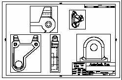
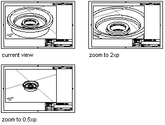

Autodesk AutoCAD 2021: ActiveX Developer's Guide > Define and Plot Layouts > About Viewports (VBA/ActiveX) >
Before you plot, you can establish accurate zoom scale factors for each section of your drawing.
Scaling views relative to paper space establishes a consistent scale for each displayed view. For example, the following illustration shows a paper space view with several viewports—each set to different scales and views. To scale the plotted drawing accurately, you must scale each view relative to paper space, not relative to the previous view or to the full-scale model.

When you work in paper space, the scale factor represents a ratio between the size of the plotted drawing and the actual size of the model displayed in the viewports. To derive this scale, divide paper space units by model space units. For a quarter-scale drawing, for example, you specify a scale factor of one paper space unit to four model space units (1:4).
Use the ZoomScaled method to scale viewports relative to paper space units. This method takes three values as input: the viewport to scale, the scale factor, and how you want that scale factor applied. The third value is optional and determines how the scale is applied:
To specify the scale relative to paper space units, enter the acZoomScaled-RelativePSpace constant for this value.
As shown in the illustrations, if you enter a scale of 2 relative to the paper space units, the scale in the viewport increases to twice the size of the paper space units. A scale of .5 relative to the paper space units sets the scale to half the size of the paper space units. The model is plotted at half its actual size.
